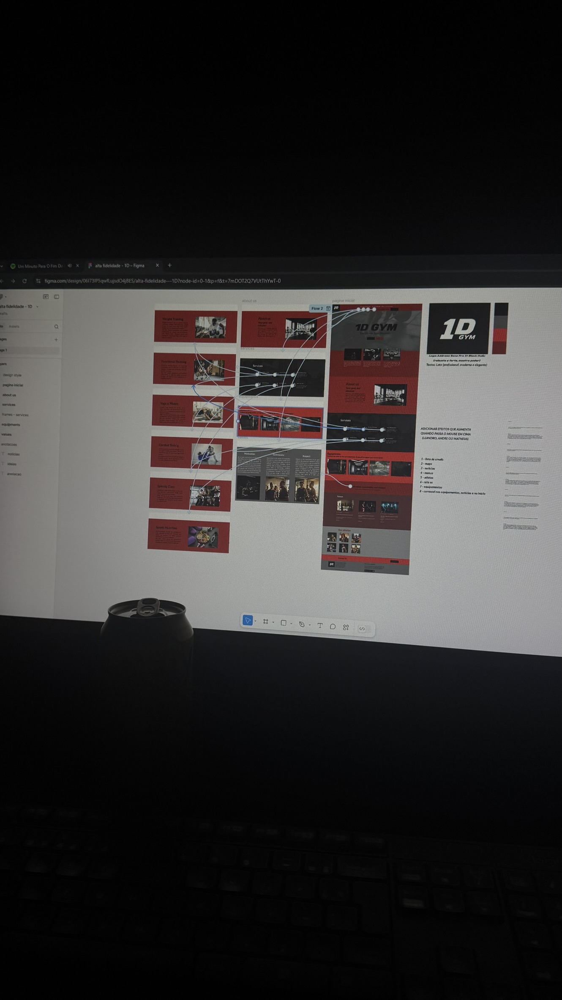

Hobbies
Gosto de jogar videogames como RDR2, FIFA e Valorant, ler filosofia e ficção, e assistir séries e filmes como As Branquelas e B99. Essas atividades me ajudam a relaxar, expandir minha criatividade e manter o equilíbrio entre trabalho e lazer.
Videogames
Os videogames são uma paixão que carrego desde a infância. Gosto especialmente de jogos que oferecem experiências imersivas, como RDR2 com sua narrativa rica, FIFA para competir com amigos, e Valorant para estratégia e trabalho em equipe.
Meus jogos favoritos incluem:
- RDR2: Narrativa envolvente e mundo aberto detalhado
- FIFA: Competição esportiva e jogos com amigos
- Valorant: Estratégia, trabalho em equipe e habilidade
- Jogos de História: Narrativas ricas e personagens complexos
- Multiplayer: Interação e competição com outros jogadores
Leitura
A leitura é um hábito que cultivo há anos e que me permite explorar diferentes perspectivas e realidades. Gosto especialmente de filosofia, que me faz questionar e refletir sobre a vida, e ficção, que me permite viajar para mundos imaginários.
Tipos de leitura que mais aprecio:
- Filosofia: Obras que questionam a existência e o conhecimento
- Ficção: Narrativas que me transportam para outros mundos
- Ficção Científica: Livros que exploram possibilidades futuras
- Romances: Histórias que exploram a complexidade humana
- Ensaios Filosóficos: Reflexões sobre vida, sociedade e valores
Séries e Filmes
Gosto muito de assistir séries e filmes, especialmente aqueles que me fazem rir e relaxar. As Branquelas é meu filme favorito, sempre me anima, e B99 (Brooklyn Nine-Nine) é uma série que adoro pela comédia inteligente e personagens carismáticos.
Meus favoritos incluem:
- As Branquelas: Meu filme favorito, sempre me faz rir
- B99: Brooklyn Nine-Nine, comédia policial inteligente
- Comédia: Séries e filmes que trazem alegria e descontração
- Séries de TV: Conteúdo para relaxar e se divertir
- Humor Inteligente: Comédias com roteiros bem escritos
Benefícios dos Hobbies
Essas atividades de lazer me trazem diversos benefícios que contribuem para meu bem-estar e desenvolvimento pessoal:
- Relaxamento: Momentos de descontração e alívio do estresse
- Criatividade: Inspiração para projetos e ideias
- Aprendizado: Descoberta de novos conhecimentos e perspectivas
- Socialização: Compartilhamento de experiências com amigos
- Equilíbrio: Manter uma vida equilibrada entre trabalho e lazer
Influência na Vida Profissional
Meus hobbies têm uma influência positiva em minha vida profissional. Os videogames me ensinaram sobre resolução de problemas e trabalho em equipe, a leitura me mantém com uma mente aberta e crítica, e as séries/filmes me ajudam a entender diferentes perspectivas humanas.
Essas atividades me permitem:
- Desenvolver pensamento crítico e analítico
- Melhorar habilidades de comunicação e storytelling
- Manter a criatividade e inovação
- Entender melhor as pessoas e suas motivações
- Manter o equilíbrio emocional e mental